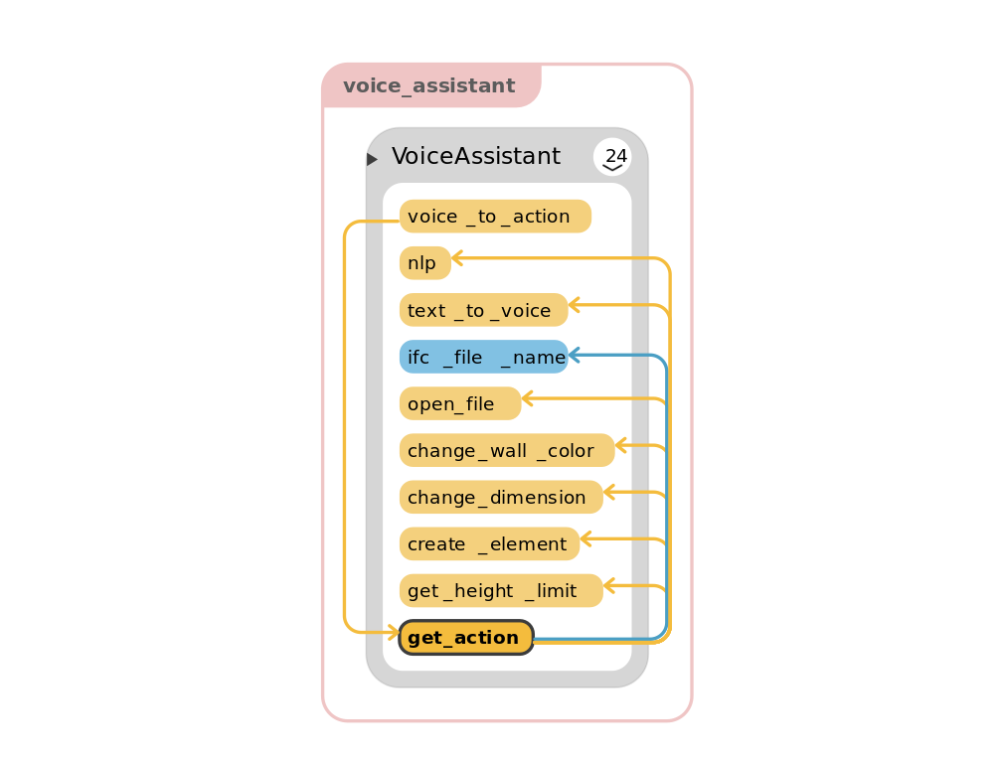
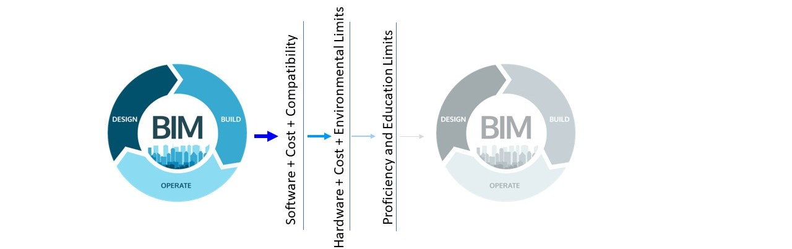
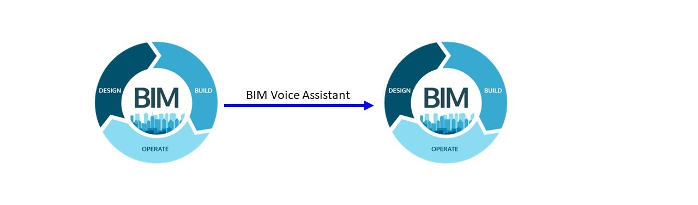

This project is conducted as part of the Design Driven Project in Construction and Robotics Master's program | RWTH Aachen with the supervision of Jakob Beetz , and the contribution of Saeed Rasagerian

BIM Voice Assistant
Digital information loss during the building life cycle, especially between the design and construction phases is incontrovertible. Except for the BIM experts, other involved people, such as craftsmen or project managers, do not have direct access to BIM data.
The project’s goal is to introduce a new computer-human interface that allows users to access BIM data with minimal training and effort. During the design process, a VR/AR project presentation session, or on-site construction, there are moments that we reach the limits of a GUI (Graphical User Interface) like a monitor, or a NUI (Natural User Interface) like a mouse; and interaction with BIM is not imaginable. BIM Voice Assistant can play a meaningful role in these moments and open new doors to BIM data transition. BIM Voice Assistant intends to present an Alexa for BIM!
BIM Voice Assistant Possible Scenarios
BIM Voice Assistant understands the voice command, extracts data from the BIM model, and responds with a voice message. The voice-assistant consists of five major modules: Automatic Speech Recognition (ASR), Natural Language Processing (NLP), Natural Language Generation (NLG), Building Information Extraction (BIE), and Text-to-Speech (TTS). The ASR module converts the voice query to a text.
The NLP module’s output is the classification of specific keywords within the text as its input data. The BIE module extracts corresponding data from the building information model, according to the classified keywords from the NLP module. The chosen BIM model format in this research is Industry Foundation Classes (IFC). The NLG module uses programmed information including keywords from the NLP module and the obtained building information data from the BIE module to generate the result as a natural language response. Finally, the TTS module converts the required response’s text to a voice message.

Functionality Diagram
The robot's movement is simulated and visualized using RVIZ. As the gypsum boards are cut, ROS publishes messages regarding the fabrication process, including whether the process has not started, started, or finished. The resulting panel geometry is subsequently pushed back to the server as an IfcBuildingElementProxy, and the panels are labeled with their fabrication status.

Based on a number of application scenarios, several basic commands have been implemented. All stakeholders in the construction industry can benefit from a higher bandwidth in human-computer interaction. The Voice assistant project started with the aim to create three of the most fundamental elements in IFC, ”IFCWall”, ”IFCWindow” and ”IFCDoor” and evolved based on the primary outputs.
Using the voice assistant, commands for data extraction, editing, and adding elements have been the most convenient use cases, respectively. It should be noted that regarding adding data to the model (such as a new wall), the voice interface has higher efficiency in combination with other interfaces (GUI or NUI). Moreover, recognition of the construction industry terms has not been always easy for general voice recognition engines like google. So, training a specific one seems beneficial. Between Sphinx, Google, IBM, Snowboy Hotword Detection, and Microsoft Bing, tokenizing the free voice recognition service of google provides a proper level of preciseness for scientific purposes.
 
A voice assistant for BIM promises higher accessibility to the required data during the building life cycle. It can improve the quality and efficiency of communication between all stakeholders. BIM Voice Assistant has the potential to help architects to add installation instructions for craftsmen. It also facilitates the documentation of the site inspection data and enables us to extract useful insights from huge building models while using other interfaces is not possible. An integrated smartphone application with different authority levels, such as data entry capabilities for architects, basic data extraction capabilities for craftsmen, and data extraction and task assignment for project managers, could be the next step of the project. Also, conventional BIM software packages could benefit from a voice assistant plugin.